FX Types & Parameters
This page lists all the Filter/Effect types provided in GameMaker, along with the following information about each FX:
- Internal name (e.g. "_filter_tintfilter") which can be passed into fx_create() to create an FX at runtime
- Description
- Example image
- IDE Parameters, which can be edited through the Layer Properties
- Runtime Parameters, which can be used to modify FXs at runtime, using the Filter and Effect Functions
- The Runtime parameters also mention their types, so you know what type of data to apply to which parameter.
| Type | Description | Example | IDE Parameters | Runtime Parameters |
|---|---|---|---|---|
| Colour Tint "_filter_tintfilter" |
Applies a colour tint to the rendered content. |  |
Tint colour | g_TintCol (Array) |
| Colourise "_filter_colourise" |
Changes everything to appear with the given hue and saturation. | 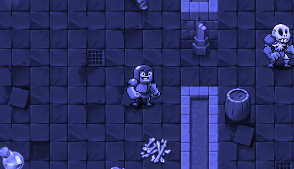 |
Intensity Tint colour |
g_Intensity (Real) g_TintCol (Array) |
| Desaturate "_filter_greyscale" |
Reduces the saturation of the rendered content by the specified intensity value. | 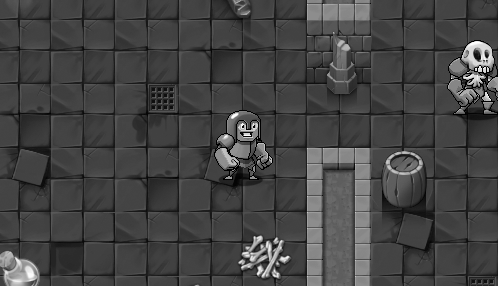 |
Intensity | g_Intensity (Real) |
| Distort "_filter_distort" |
Applies distortion to the game, using a texture image. | 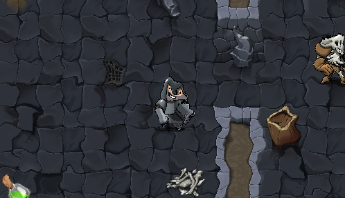 |
Scale Amount Offset Distort texture |
g_DistortScale (Real) g_DistortAmount (Real) g_DistortOffset (Real) g_DistortTexture (Sampler) |
| Dots Background "_filter_dots" |
Applies a dotted effect to your game, with optional animation. You can create a noise effect by setting the scale to a low value. | 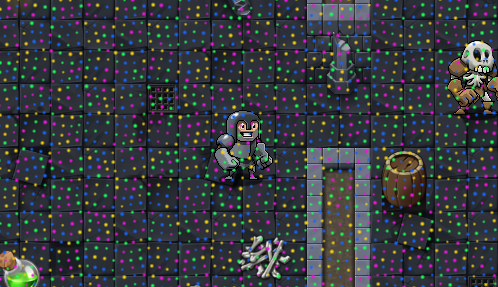 |
Scale Size Offset Displacement Animation Speed Colour Speed Colour Count Sharpness Colour Palette |
g_DotsScale (Real) g_DotsSize (Real) g_DotsOffset (Real) g_DotsDisplacement (Real) g_DotsSpeed (Real) g_DotsColourSpeed (Real) g_DotsColours (Real) g_DotsSharpness (Real) g_DotsPalette (Sampler) |
| Edge Detect "_filter_edgedetect" |
Uses edge detection so only the edges in your game are visible. | 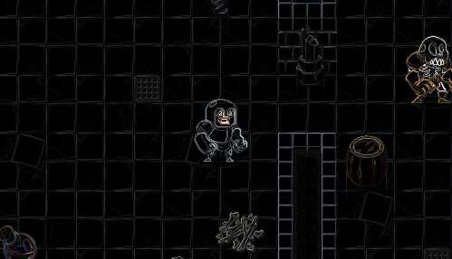 |
Threshold | g_Threshold (Real) |
| Heat Haze "_filter_heathaze" |
Creates an animated heat haze effect and is useful for displaying hot environments. | 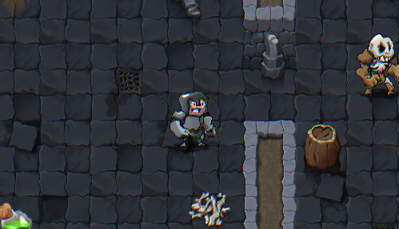 |
Distort 1 Speed Distort 2 Speed Distort 1 Scale Distort 2 Scale Distort 1 Amount Distort 2 Amount Chroma Spread Camera Offset Scale Distort Texture |
g_Distort1Speed (Real) g_Distort2Speed (Real) g_Distort1Scale (Real) g_Distort2Scale (Real) g_Distort1Amount (Real) g_Distort2Amount (Real) g_ChromaSpreadAmount (Real) g_CamOffsetScale (Real) g_DistortTexture (Sampler) |
| Large Blur "_filter_large_blur" |
Blurs the image. | 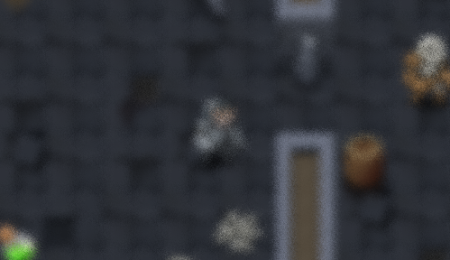 |
Radius Noise texture |
g_Radius (Real) g_NoiseTexture (Sampler) |
| Linear Blur "_filter_linear_blur" |
Creates a linear blur effect controlled by the given vector values (X and Y, between -128 and 128). | 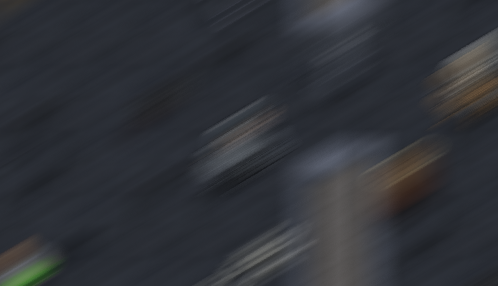 |
Vector Noise texture |
g_LinearBlurVector (Array) g_NoiseTexture (Sampler) |
| Outline "_filter_outline" |
Creates an outline around the opaque contents of the layer. Use this as a Single-Layer FX for the best effect. | 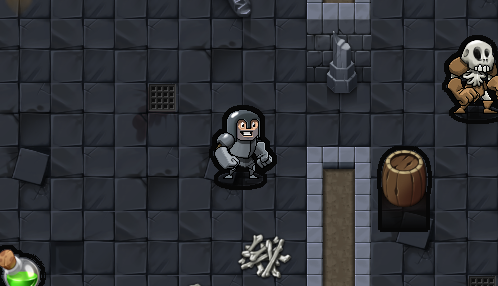 |
Outline colour Radius Pixel scale |
g_OutlineColour (Array) g_OutlineRadius (Real) g_OutlinePixelScale (Real) |
| Pixelate "_filter_pixelate" |
Makes the rendered content look pixelated, allowing you to change the size of each pixel. This gives the rendered content a low resolution look. | 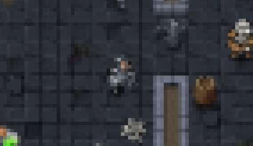 |
Cell Size | g_CellSize (Real) |
| Posterise "_filter_posterise" |
Applies a posterisation effect to the rendered content, allowing you to change the max colour levels for each hue. | 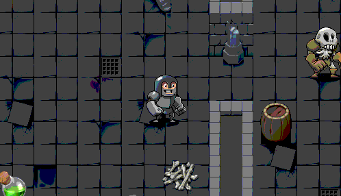 |
Colour Levels | g_ColourLevels (Real) |
| Screen Shake "_filter_screenshake" |
Makes the rendered content shake to simulate a camera shake effect. Works best when controlled at runtime. | Magnitude Shake speed Noise texture |
g_Magnitude (Real) g_ShakeSpeed (Real) g_NoiseTexture (Sampler) |
|
| Stripes Background "_filter_stripes" |
Creates an opaque, striped background effect. | 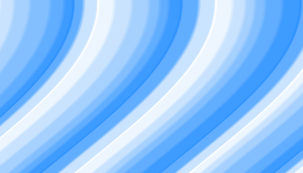 |
Width Direction Offset Displacement Animation Speed Wave Scale Wave Amplitude Colour Count Sharpness Colour Palette |
g_StripesWidth (Real) g_StripesDirection (Real) g_StripesOffset (Real) g_StripesDisplacement (Real) g_StripesSpeed (Real) g_StripesFrequency (Real) g_StripesAmplitude (Real) g_StripesColours (Real) g_StripesSharpness (Real) g_StripesPalette (Sampler) |
| Twirl Distort "_filter_twirl_distort" |
Creates a twirl distort effect at the center of the camera (+ the offset). | 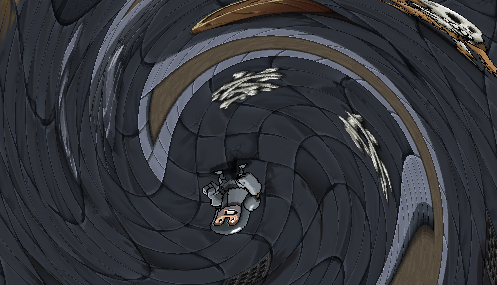 |
Angle Radius Offset |
g_DistortAngle (Real) g_DistortRadius (Real) g_DistortOffset (Real) |
| Underwater "_filter_underwater" |
Makes the rendered content look like it is underwater. | 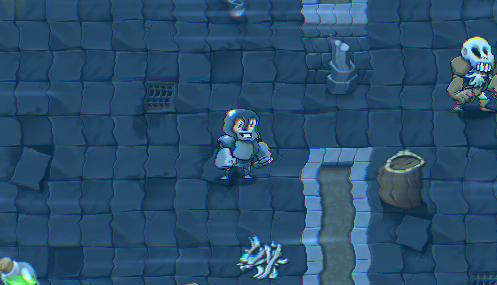 |
Distort 1 Speed Distort 2 Speed Distort 1 Scale Distort 2 Scale Distort 1 Amount Distort 2 Amount Chroma Spread Camera Offset Scale Glint Colour Tint Colour Add Colour Distort Texture |
g_Distort1Speed (Real) g_Distort2Speed (Real) g_Distort1Scale (Real) g_Distort2Scale (Real) g_Distort1Amount (Real) g_Distort2Amount (Real) g_ChromaSpreadAmount (Real) g_CamOffsetScale (Real) g_GlintCol (Array) g_TintCol (Array) g_AddCol (Array) g_DistortTexture (Sampler) |
| White Noise "_filter_whitenoise" |
Adds white noise, with optional animation. | 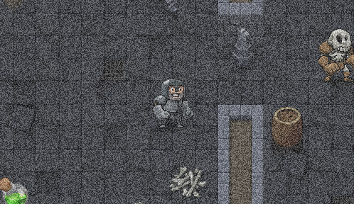 |
Intensity Animation Noise Texture |
g_WhiteNoiseIntensity (Real) g_WhiteNoiseAnimation (Real) g_WhiteNoiseTexture (Sampler) |